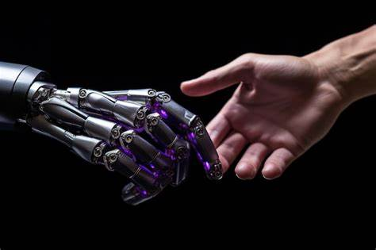
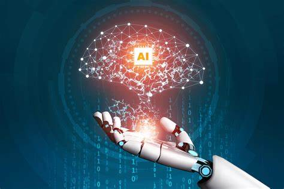
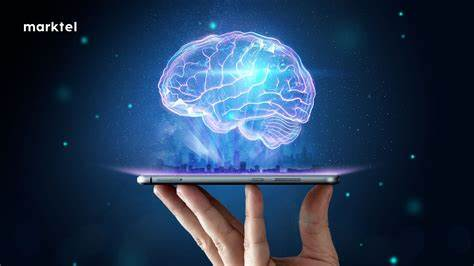

Colaboración Humano-IA
Sinergia Creativa

La colaboración humano-IA permite a los artistas y creadores explorar nuevas fronteras. Por ejemplo, los músicos pueden usar IA para generar melodías o ritmos que luego refinan y personalizan. En el diseño gráfico, la IA puede sugerir combinaciones de colores o estilos que los diseñadores pueden ajustar según su visión artística.
Mejora de la Toma de Decisiones
.jpg)
En sectores como la atención médica, la IA puede analizar grandes volúmenes de datos para proporcionar diagnósticos precisos y recomendaciones de tratamiento. Los médicos, a su vez, utilizan estos insights para tomar decisiones informadas y personalizadas para cada paciente.
Automatización Inteligente
.jpg)
La IA puede encargarse de tareas repetitivas y de bajo valor, liberando a los humanos para que se concentren en actividades más creativas y estratégicas. Por ejemplo, en el servicio al cliente, los chatbots de IA pueden manejar consultas básicas, mientras que los agentes humanos se ocupan de problemas más complejos.
Innovación en la Educación

La IA está revolucionando la educación al personalizar el aprendizaje para cada estudiante. Los sistemas de tutoría basados en IA pueden identificar áreas donde los estudiantes necesitan más apoyo y proporcionar recursos específicos para mejorar su comprensión.
Desafíos y Consideraciones Éticas

Transparencia y Confianza: Es crucial que los sistemas de IA sean transparentes en su funcionamiento para generar confianza entre los usuarios.
Bias y Equidad: Los algoritmos de IA deben ser diseñados y entrenados para evitar sesgos que puedan perpetuar desigualdades.
Responsabilidad: Es importante definir claramente quién es responsable de las decisiones tomadas por sistemas de IA, especialmente en áreas críticas como la salud y la justicia.
Historias de Éxito
.jpg)
Atención Médica: La colaboración entre radiólogos y sistemas de IA ha mejorado la precisión en la detección de enfermedades como el cáncer.
Arte y Cultura: Proyectos como “The Next Rembrandt” utilizan IA para crear nuevas obras de arte inspiradas en el estilo de artistas famosos.
La colaboración humano-IA no solo amplía las capacidades humanas, sino que también abre nuevas posibilidades para la innovación y la creatividad.